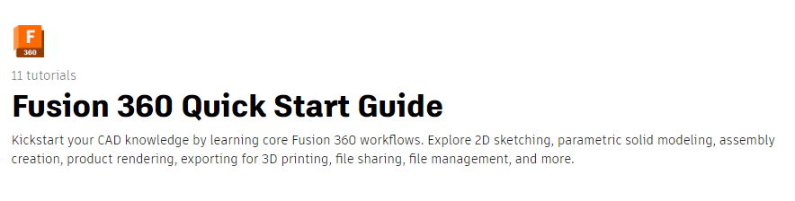
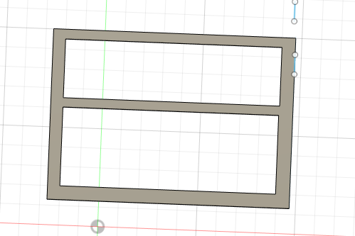
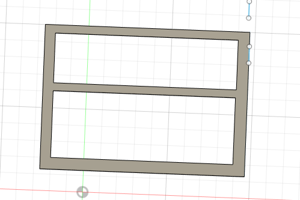

Journals

Research
Case Design and Conceptualization
Learned Sketch design tool to create case
Tutorials Completed

Learned the basics of CAD Software in Fusion 360
learned the extrude tool and fusion360 to ultimaker cura, materials and different thicknesses
Top Case
top case created for keyboard to be slotted out, touchpad and other accessories to be used
in the future
Bottom Case
ram is going to be slotted outside to save space for the motherboard. and nvme / ssd
Measuring the keycaps, length, depth
while finding keycaps i came across a issue that i had to make it in fusion360,
due to the low existance of low profile keycaps that i wanted, and that they were pretty expensive
i turned to 3d print them to lower the cost then, send over the specifications to a fabrication plant
for it to be doubleshot and in abs or pla.
 

Learned the basics of CAD Software and created a laptop case with it.
I am on schedule but however the case does not have the features that i would like it to have
ports and connectors
https://www.youtube.com/watch?v=ySuUZEjARPY&t=0s
https://www.youtube.com/watch?v=VtzPL8wQ8-E